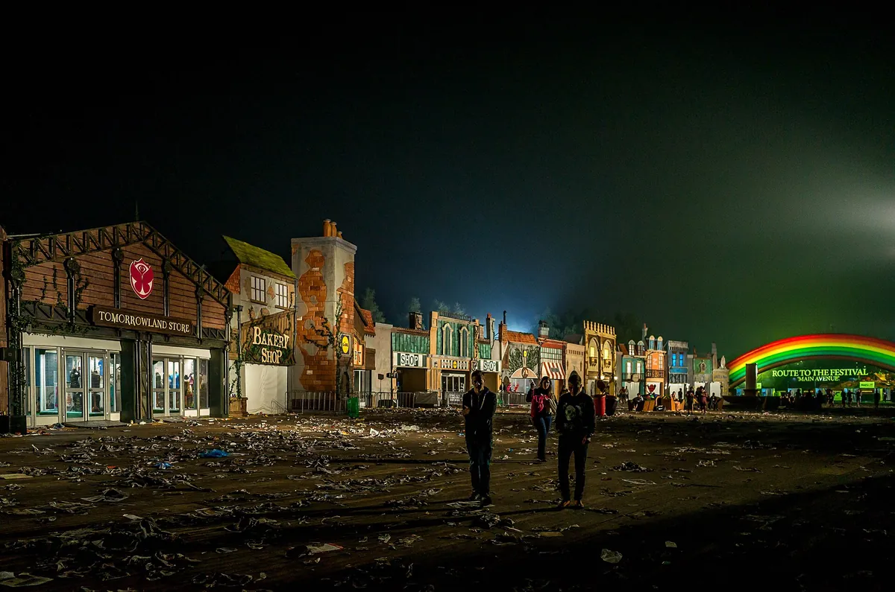
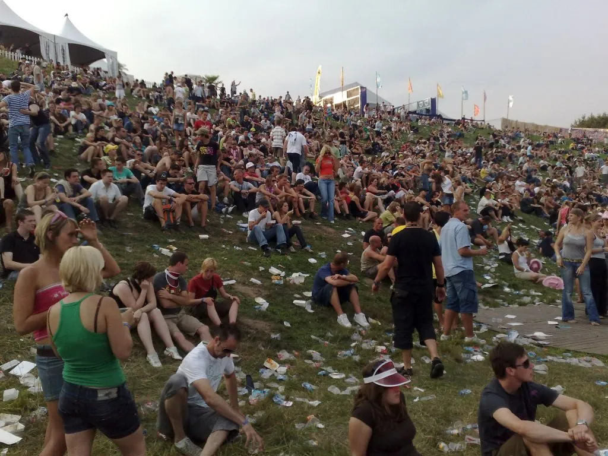
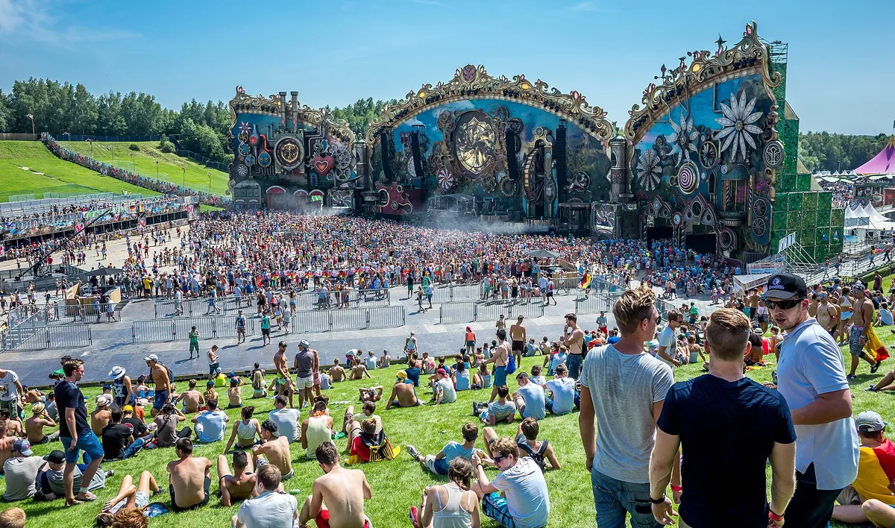
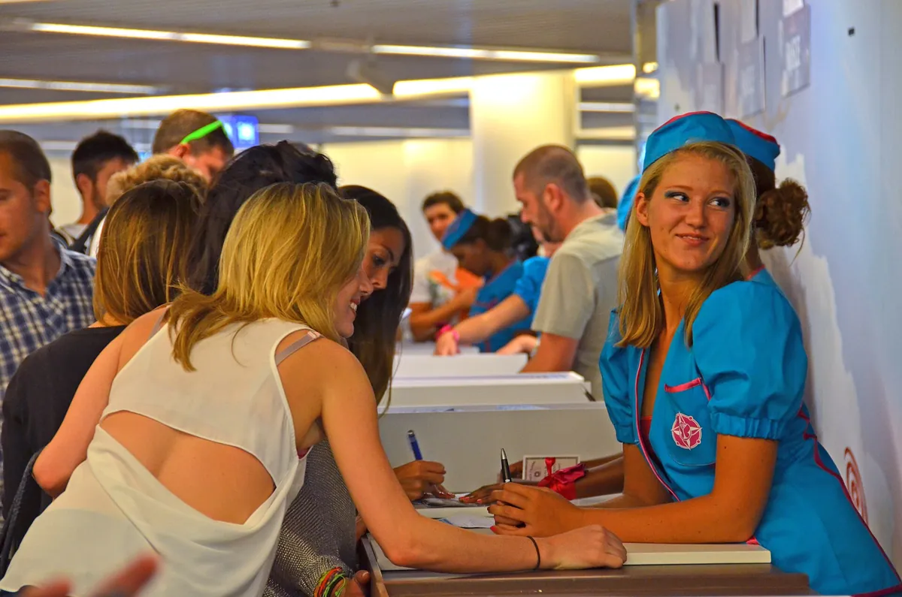
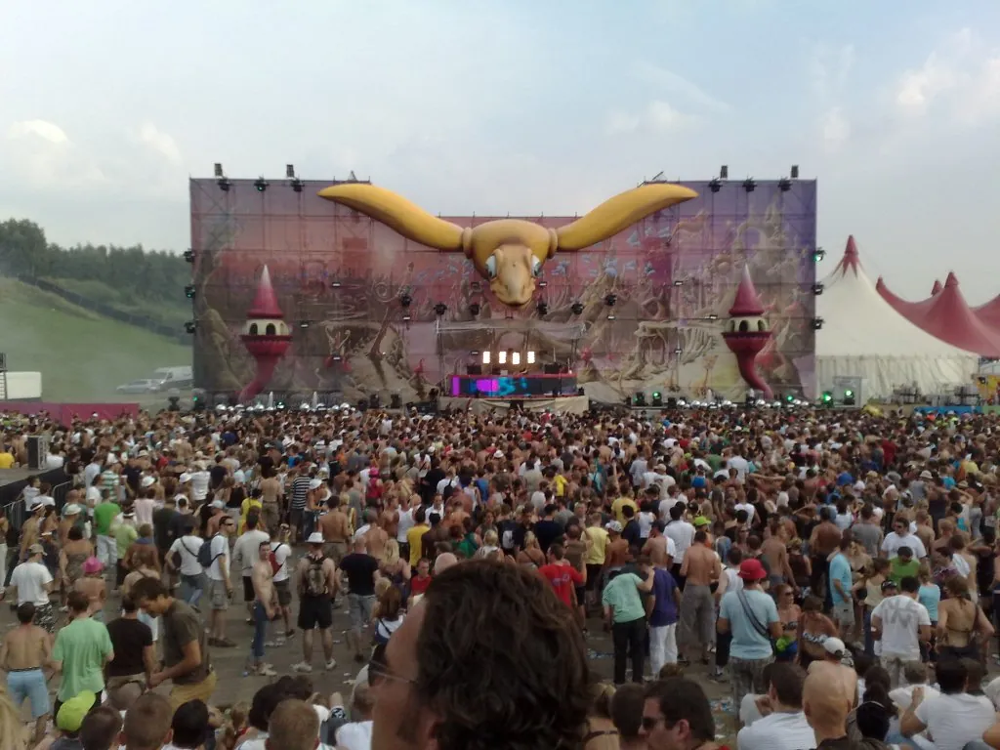

Tomorrowland
Tomorrowland Festival
A festival in a Belgian park that most of the world knows through a screen. Where it happens, how big it really is, who owns it, and what plays away from the Mainstage.
The festival most people watch.
For people outside dance music, Tomorrowland is often the one electronic music festival they can name, and most of them have never been. The Tomorrowland music festival reaches far more people through a screen than through its gates: 233 million livestream views in 2026, against 400,000 tickets.
This guide is about the Belgian festival, not the land at Disney's parks or the 2015 film that share its name. It covers where Tomorrowland happens and when, how big it really is, who started it and who owns it now, and why it became famous. Then it answers the question this site is here for: under the fireworks and the Mainstage, what does Tomorrowland actually play?
Where Tomorrowland happens.
Where is Tomorrowland? The main festival has never moved. The Tomorrowland location has been the same since the first edition in 2005: De Schorre, a provincial recreation park in the town of Boom, in the province of Antwerp, between Antwerp and Brussels. The organisers call this edition Tomorrowland Belgium, to tell it apart from the festivals that now carry the name elsewhere.
Tomorrowland takes the last two weekends of July, and each weekend is its own three-day festival, Friday to Sunday, with its own tickets. Many visitors stay at DreamVille, the festival's campsite, which has seven areas running from basic pitches to luxury accommodation and is sold as a package with the festival ticket. On the Friday of the 2025 edition, around 38,000 people were camping there.

The Belgian festival is the original. Since 2013 the name has travelled, and the editions abroad are what most of the confusion about where Tomorrowland is comes from.
Tomorrowland Winter
Tomorrowland Winter has run since 2019 in Alpe d'Huez, a ski resort in the French Alps. The first edition was on 13 to 15 March 2019, and it takes the second or third week of March.
Tomorrowland Thailand
Tomorrowland Thailand is the newest, scheduled for 11 to 13 December 2026 at Wisdom Valley, near Pattaya. At the time of writing it has not yet taken place.
Tomorrowland Brasil and TomorrowWorld
Tomorrowland Brasil was held in Itu, in São Paulo state, in 2015 and 2016, and came back in 2023. TomorrowWorld, the American version, ran in Chattahoochee Hills, Georgia, from 2013 to 2015. Alongside the full editions, Unite with Tomorrowland has taken smaller events to countries including Germany, Spain, Malta, Lebanon and South Korea.
Tomorrowland in the USA
There is no Tomorrowland USA festival at the time of writing, in September 2026. The nearest thing is UNITY, a joint production with the promoter Insomniac at Sphere in Las Vegas, which opened over Labor Day weekend, 29 to 31 August 2025: 360-degree visuals, an orchestral score, and a live headline set each night.
During the 2026 festival, a banner in DreamVille read "Tomorrowland Uniting the World in 2027" and listed Las Vegas among its destinations. Tomorrowland has not announced a Las Vegas festival, dates or a venue, and when asked, its representatives pointed to UNITY.
How big Tomorrowland is.
Tomorrowland capacity is 200,000 people per weekend. Two weekends give the familiar total of 400,000, the figure for 2017 to 2019, for 2023 and 2024, and again for 2026, when visitors came from more than 200 countries.
Tomorrowland attendance has grown in steps rather than in a straight line. The first edition, in 2005, drew somewhere between 8,700 and 10,000 people, depending on the source. By 2010 it was 180,000. In 2022, the first edition after two years lost to the pandemic, it ran over three weekends and reached 600,000, its record.
| Year | Attendance | What happened |
|---|---|---|
| 2005 | 8,700 to 10,000 | First edition, 15 August; sources differ |
| 2010 | 180,000 | |
| 2017 to 2019 | 400,000 | Two weekends |
| 2020 and 2021 | none | Cancelled for the pandemic |
| 2022 | 600,000 | Three weekends, the record |
| 2023 and 2024 | 400,000 | |
| 2026 | 400,000 | Visitors from more than 200 countries |
Tickets are the harder number. In 2013 the full-weekend passes sold out in 35 minutes and the rest in what was reported as one second. The pattern has held: the 2026 edition sold out across both weekends in under an hour.
The audience that never comes is bigger still. Tomorrowland's livestreams drew 193 million views in 2025 and 233 million in 2026, across YouTube, TikTok, Facebook and Instagram. That is the Tomorrowland most people know.
A short history, and who owns Tomorrowland.
Tomorrowland began on 15 August 2005, organised by Manu and Michiel Beers with ID&T. It grew in the same park, and by 2010 it was drawing 180,000 people.

In 2013 the name went abroad for the first time, with TomorrowWorld in Georgia. For the tenth edition, in 2014, the festival was held over two weekends, the format it has used in most years since. Two editions were lost to the pandemic: 2020 was cancelled and replaced by Tomorrowland Around the World, a virtual festival streamed on 25 and 26 July, and 2021 was cancelled on 23 June. The festival came back in 2022 over three weekends.
The Tomorrowland fire of 2025 came two days before the gates opened. On 16 July the Mainstage was destroyed. Nobody was hurt, and DJ Mag later reported the likely cause as an ethanol spill while subcontractors tested the fire bowls for the stage's pyrotechnics. The festival opened on schedule on 18 July, on a smaller replacement stage built in two days with speakers that had also been used for Metallica's shows, and the charred frame of the old stage still in view.
Who owns Tomorrowland? The founders have stayed with it from the start, and the company behind it today is WEAREONE.world, which commissioned the independent safety review after the fire as Tomorrowland's parent company.
Why Tomorrowland got so famous.
Three things made Tomorrowland famous, and the music is only one of them.
The first is the stage. The Mainstage is built around a theme, and Wikipedia calls it the largest and most elaborate stage of any festival. For 2026, under the theme Consciencia, it stood more than 43 metres tall and 140 metres wide, with waterfalls, fountains and six giant sculptures, one for each of the emotions the theme was built on: wonder, love, anger, joy, desire and sadness.

The second is how far it reaches. The livestream turned a festival in a Belgian park into something people watch from everywhere, and the festival sells the trip as well as the ticket. Global Journey packages, run with Brussels Airlines, bundle flights, hotels and weekend tickets; for 2026 they sold out on 17 January, two weeks before the general sale.

The third is scarcity. With 200,000 places a weekend and buyers from more than 200 countries, getting a ticket is a story of its own before anyone has heard a note.
The music
What the music actually is.
Tomorrowland is not a genre festival, and the Mainstage is not the whole of it. The Mainstage is big-room EDM: the names that come back edition after edition include Armin van Buuren, David Guetta and Martin Garrix, and the Belgian duo Dimitri Vegas & Like Mike have written several of the festival's official anthems. In 2026 Calvin Harris made his Belgian debut, closing the Mainstage on both Saturdays.
Dimitri Vegas & Like Mike are the sound of that stage more than anyone. Their 2025 set, from the year the original stage burned, is the Mainstage in full.
Away from it, there were sixteen stages in 2026, built around the theme's six emotions rather than sorted by genre, with more than 500 artists across them. The hosted stages are where the other music lives. Techno has had a place since the early years: Carl Cox played in 2008. In 2026 Charlotte de Witte turned up unannounced.

Drum and bass is the part this site cares about most, and it has been at Tomorrowland longer than the Mainstage suggests. In 2017 Netsky hosted a stage of his own, with Camo & Krooked on it. In 2026 Chase & Status played the Freedom by Bud stage on the first weekend and the Mainstage on the second: a UK drum and bass duo on the stage built for EDM's biggest names. Camo & Krooked were back that year, and Bassrush took over the Rose Garden with dubstep.
For a listener who comes from breaks, jungle or techno, that is the useful thing to know. Tomorrowland is worth going to for the park and the production, and the music worth crossing Europe for is on the hosted stages, not only under the fireworks.
Hearing Tomorrowland from home.
Tomorrowland films its stages and puts whole sets on its own YouTube channel, which is a large part of why the livestream numbers are so big. The two below are from the stages this guide argues for: Chase & Status on the 2026 Mainstage, and Camo & Krooked on Netsky's stage in 2017.
For the festival that is the opposite of Tomorrowland, a city with no lineup and nothing for sale, read our guide to Burning Man. Our guide to live DJ sets covers who else films the music. And the Selector plays one full DJ set at random from 62,877, if you would rather not choose.
Tomorrowland FAQ.
How much are Tomorrowland tickets?
For 2026, day passes started at €138 and Full Madness weekend passes at €304 in the pre-sale or €365 in the worldwide sale. DreamVille camping packages started at €381. They sell out in minutes, so being in the queue matters more than the price.
How many people go to Tomorrowland?
About 400,000 across the two weekends, up to 200,000 per weekend. The record is 600,000, in 2022, when the festival ran over three weekends.
When is Tomorrowland?
The last two weekends of July, Friday to Sunday. In 2026 that was 17 to 19 July and 24 to 26 July. Tomorrowland Winter is in March, and Tomorrowland Thailand is scheduled for December 2026.
Where is Tomorrowland?
In De Schorre, a provincial recreation park in Boom, Belgium, about 16 km south of Antwerp and 32 km north of Brussels.
Who owns Tomorrowland?
Tomorrowland was founded by the brothers Manu and Michiel Beers and first organised with ID&T. Its parent company today is WEAREONE.world.
Is Tomorrowland coming to the USA?
Not as a festival, so far. TomorrowWorld ran in Georgia from 2013 to 2015, and since 2025 Tomorrowland has co-produced UNITY with Insomniac at Sphere in Las Vegas. A 2027 banner at the 2026 festival listed Las Vegas, but no festival has been announced.
Sources.
- Wikipedia: Tomorrowland (festival)
- Pollstar: Tomorrowland Breaks Own Livestream Record
- Bandwagon: Tomorrowland Belgium 2026 wraps with 400,000 fans
- DJ Mag: Tomorrowland 2025 Mainstage fire reportedly caused by ethanol spill during testing
- Euronews: Belgium's Tomorrowland festival opens after massive fire destroyed main stage
- Revolution 935: Tomorrowland Belgium 2026 Tickets
- Conscious Electronic: Is Tomorrowland heading to Las Vegas in 2027?
- Las Vegas Weekly: Insomniac and Tomorrowland go b2b for Unity at Sphere
- 1001Tracklists: Chase & Status, Mainstage, Tomorrowland weekend 2, 2026
- 1001Tracklists: Camo & Krooked, Netsky & Friends stage, Tomorrowland 2017
Continue reading
Read next.
 A09List / Boiler Room / ~13 min
A09List / Boiler Room / ~13 minBest Boiler Room Sets of All Time, Ranked and Measured
Eighteen sets picked for what happens in them, beside the ten most-watched, counted across 8,206 Boiler Room recordings.
Read article → A10Guide / Burning Man / ~12 min
A10Guide / Burning Man / ~12 minWhat Is Burning Man? The Event, the City and the Music
A city built in the Nevada desert for a week, with no lineup and nothing for sale, and the sound camps that play anyway.
Read article → A11Guide / Berlin clubs / ~10 min
A11Guide / Berlin clubs / ~10 minBest Clubs in Berlin: The Legends and the Ones Still Open
The rooms that made Berlin a techno city, the famous clubs that closed, and the best clubs in Berlin that are still open.
Read article → A12Guide / London clubs / ~12 min
A12Guide / London clubs / ~12 minClubs in London: The Legends and the Best Ones Open Now
The London clubs that made acid house, jungle, garage and dubstep, from Heaven to the Blue Note, and the best clubs in London open now.
Read article →